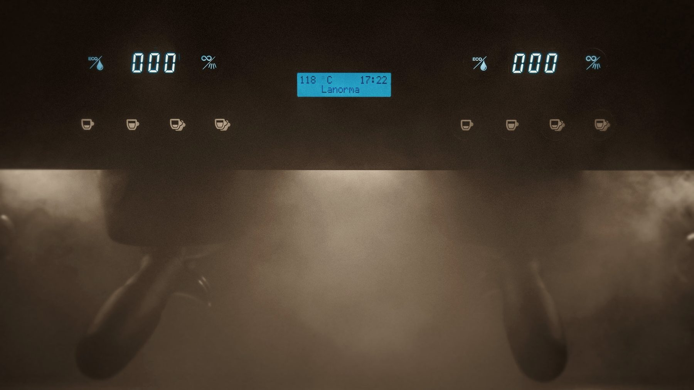
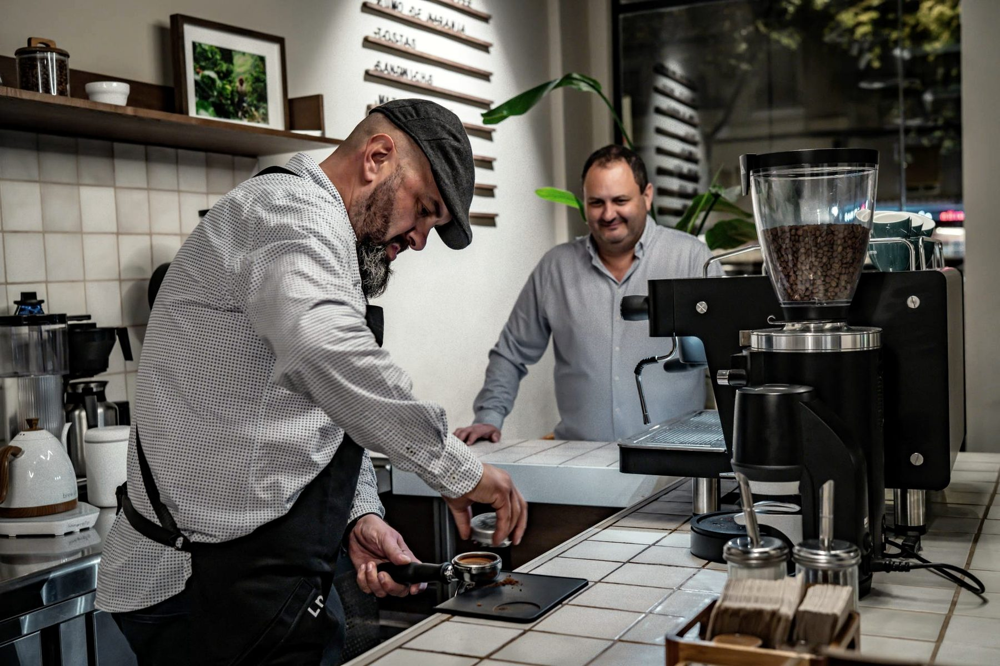
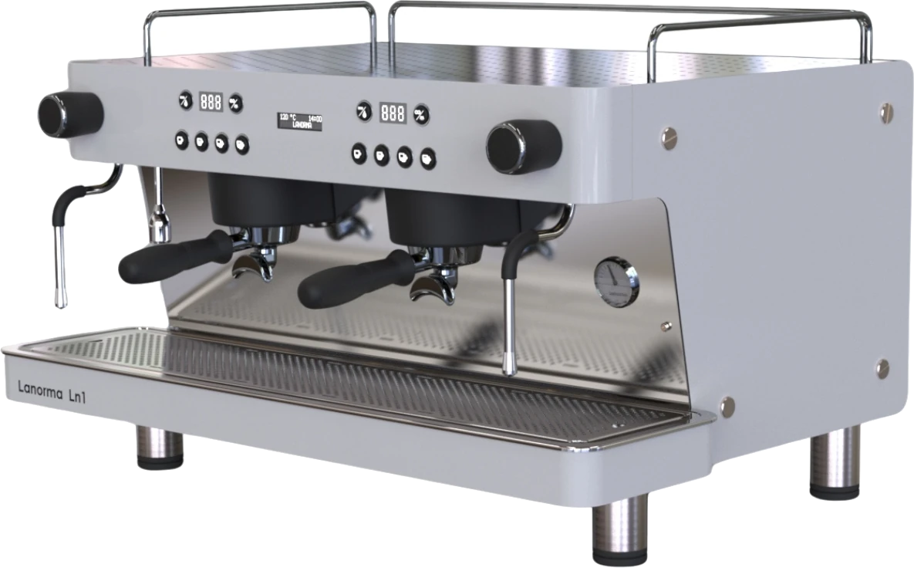
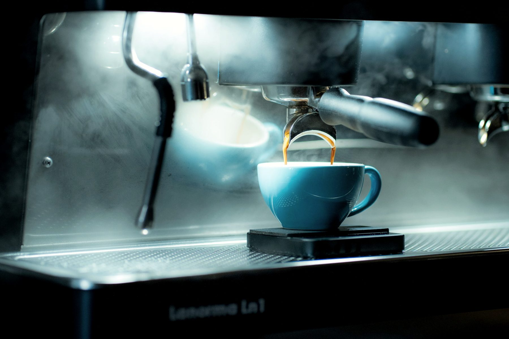
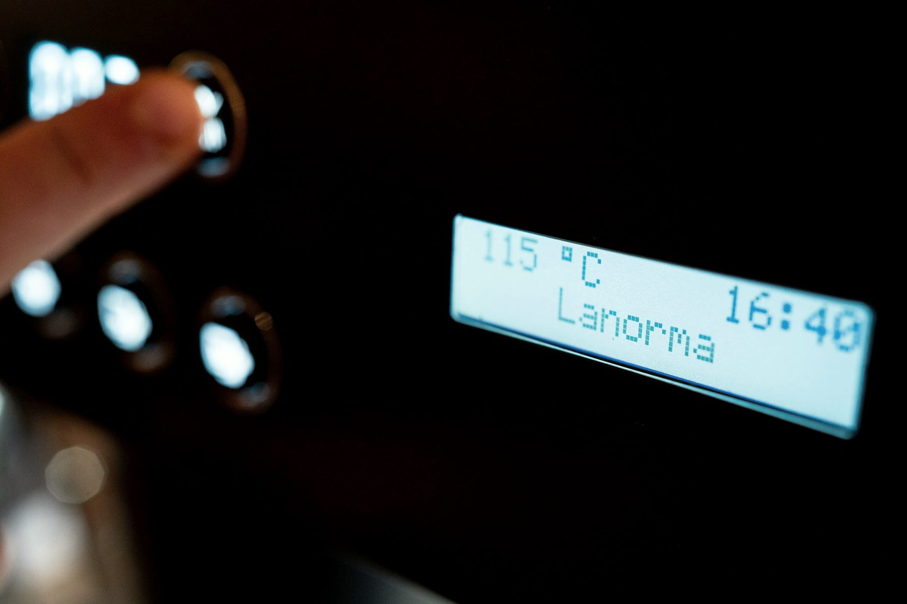

Este cuaderno se queda contigo. Recoge lo que has visto en el taller: quiénes lo hacemos, cómo está construida la Ln1 y cómo seguimos hablando cuando vuelvas a tu barra.

Fabricante de máquinas de café · Palma de Gandia, Valencia
Índice
Gracias por venir
Este cuaderno se queda contigo. Recoge lo que has visto en el taller: quiénes lo hacemos, cómo está construida la Ln1 y cómo seguimos hablando cuando vuelvas a tu barra.
Ln1 en uso. Todas las fotografías de este cuaderno son del archivo de La Norma.
A confirmar con Daniel Dato pendiente de validar antes de imprimir. Todo lo que no lleva esta marca sale del catálogo y la web de La Norma.

El equipo de La Norma, detrás de la barra.
Quiénes somos
No somos una marca pensada desde el marketing. Somos ingenieros, diseñadores industriales y técnicos que han vivido el café desde dentro. Por eso nuestras máquinas no solo funcionan: entienden el ritmo real de una barra.
Nacimos en Valencia con una idea clara: combinar precisión, diseño y durabilidad en herramientas para baristas, tostadores y amantes del café profesional. Cada máquina se ensambla y se prueba a mano en nuestro taller de Palma de Gandia.
Cada botón, cada detalle, cada curva tiene una razón: observamos cómo trabajan los baristas.
No creemos en la obsolescencia: máquinas robustas, accesibles y reparables.
Hablas con quienes la diseñan y construyen. Sin intermediarios, antes, durante y después.
La Ln1 por dentro
Compacta, 2 grupos o 3 grupos: cada modelo nace del mismo principio, adaptado al volumen real de tu barra. Cambian el cuerpo y la caldera; no cambia la manera de hacer café.

Ln1 · 2 grupos. Render de fábrica sobre fondo de la página. Los tres modelos se fabrican en acabado blanco o negro.
Ficha técnica · gama Ln1
| CompactaModelo | 2 gruposModelo | 3 gruposModelo | |
|---|---|---|---|
| Medidas | 485 × 564 × 530 mm | 485 × 564 × 800 mm | 485 × 564 × 1050 mm |
| Peso | 45 kg | 65 kg | 70 kg |
| Caldera | 8 L | 13 L | 20,5 L |
| Voltaje | 220 – 240 V | 220 – 240 V 380 – 415 3N | 380 – 415 3N |
| Frecuencia | 50 – 60 Hz | 50 – 60 Hz | 50 – 60 Hz |
| Potencia | 2200 – 3200 W | 3400 – 4700 W | 6200 W |
Los tres modelos están disponibles en versión vaso alto, pensada para tazas más grandes. Es una configuración que se elige en el momento de la compra, no un accesorio que se cambia después.
Personalización del frontal de acero con el nombre del negocio: proceso, modelos y plazo A confirmar con Daniel

Extracción en una Ln1. Grupo erogador propio, con cámara de preinfusión.
Pensada al detalle
Botón de purga ajustable de 2 a 6 segundos.
Control manual y automático de la eficiencia energética.
Con cámara de preinfusión y preparado para dos tipos de duchas.
Encendido y apagado diario, incluyendo dos días de descanso.
Zona de trabajo iluminada, con pulsador de encendido.
Proceso de limpieza automático.
Dosificador de agua caliente para el té, por grupo.
Control por sonda y PID, desde la botonera y visible en el display.
Control
Sonda de temperatura, tecnología PID y manómetro de presión: cada máquina controla la extracción para que el resultado no dependa de la suerte.

El display de la Ln1 muestra la temperatura leída por la sonda.
Lo que dicen
«Soy distribuidor de café, tengo ya varias máquinas y hacen muy buen café, fáciles de mantener y bonitas. El servicio de 10.»
Manuel Juan RodríguezReseña pública en Google
«Unos cracks, profesionales y serios. Oscar y Dani, 2 profesionales como la copa de un pino. 100 % recomendables.»
Borja Reina RomeroReseña pública en Google
Reseñas reproducidas tal cual aparecen en Google, sin editar.
Lo próximo
Una máquina nueva ya está en marcha en el taller. Fotos, ficha técnica y precio llegarán en su propia presentación: preferimos enseñártela terminada antes que adelantarte cifras.
Si quieres ser de los primeros en verla, dínoslo antes de irte.
Primeras unidades ya entregadas y fecha de presentación A confirmar con Daniel
Ficha técnica · LN200
| Grupos | — |
|---|---|
| Caldera | — |
| Potencia | — |
| Medidas | — |
| Peso | — |
| Disponibilidad | — |
Ficha vacía a propósito. Se completa cuando La Norma publique las especificaciones oficiales. A confirmar con Daniel
Cómo seguimos
Cuántos cafés sirves al día, cuánto espacio tienes y qué taza usas. Con eso ya sabemos por dónde empezar.
Compacta, 2 grupos o 3 grupos; versión estándar o vaso alto; acabado y voltaje según tu instalación.
Escribes a quienes la diseñan y construyen, y te responden ellos. Plazo de entrega e instalación A confirmar con Daniel
Contacto
Notas de la visita
Fabricado a mano en Valencia
Pol. Ind. C. Garbí 1, Sector 3 · 46724 Palma de Gandia · +34 960 64 00 72 · info@lanorma.es
Edición 01 · Borrador para revisión interna. Las marcas A confirmar con Daniel señalan datos pendientes de validar antes de imprimir. © 2026 La Norma Coffee Machine Manufacturer S.L.